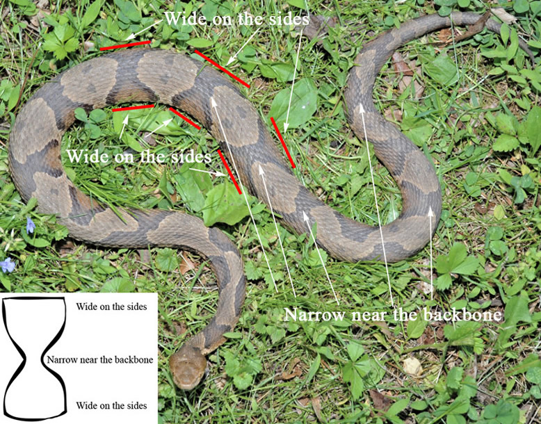
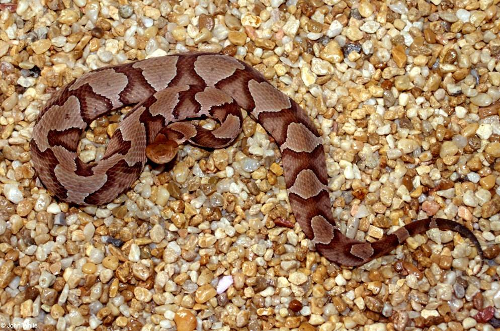
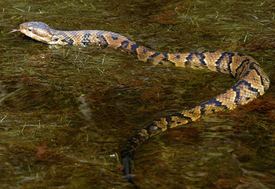
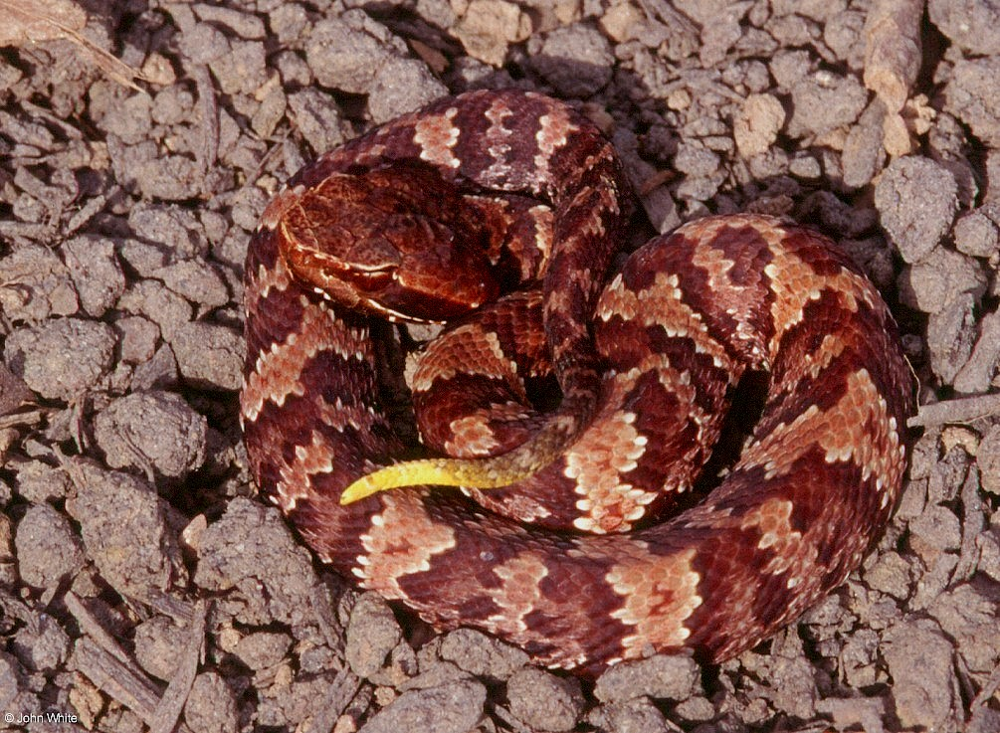
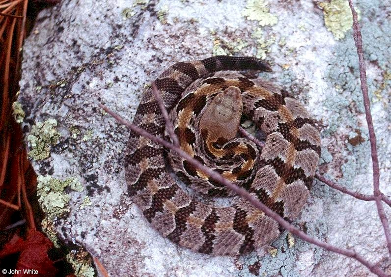
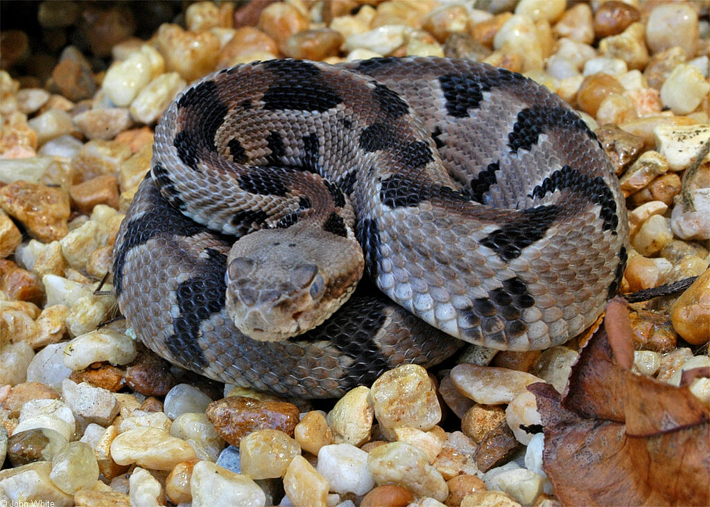

Virginia has only 3 venomous species. All are pit vipers with a heat-sensing pit between the eye and nostril used to locate prey.
The most common venomous snake found in Virginia.


Coppery-red head, often triangular shaped
Hourglass-shaped bands that resemble Hershey's Kisses — narrow near the backbone, wide on the sides
Juveniles are colored and patterned as adults, but the tip of the tail is sulfur yellow
Found almost all across Virginia
Opens its mouth wide when threatened, appearing white like cotton!


Dark with a mask above their eye — like the "Mask of Zorro!"
Dark, thick-bodied with a Christmas Tree-like (or dumbbell) pattern, broader at the bottom, narrow on top. Some may appear dark with no patterns.
Can grow up to 50–60 inches, usually with a thick large body
Fish, reptiles, amphibians (frogs), small mammals, and invertebrates
Near Virginia Beach area (South East Virginia)
Have sulfur-yellow tail tip with brighter pattern colors
Has a rattle on its tail and black zig-zag patterns (like inverted V shapes).


Highly variable in color, most possess a series of zigzag-shaped blotches (chevrons) and crossbands on dorsum
Can grow up to 6 feet in length
Squirrels, rats, mice, cottontail rabbits, six-lined racerunners, skinks, and birds
Mostly in North Eastern Virginia mountains and some areas near South West Virginia